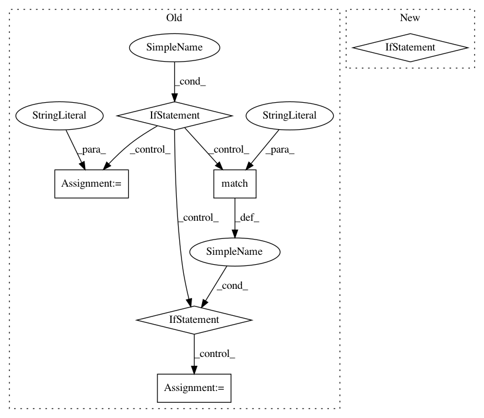

1b43ea3d9f7db02075536d9578891af06e324b9a,scattertext/WhitespaceNLP.py,,_toks_from_sentence,#Any#Any#Any#,62
Before Change
toks = []
for tok in re.split(r"(\W)", doc):
pos = "WORD"
if tok.strip() == "":
pos = "SPACE"
elif re.match("^\W+$", tok):
pos = "PUNCT"
toks.append(Tok(pos,
tok[:2].lower(),
tok.lower(),
ent_type="" if entity_type is None else entity_type.get(tok, ""),
After Change
def _toks_from_sentence(doc, entity_type, tag_type):
toks = []
for tok in re.split(r"(\W)", doc):
if len(tok) > 0:
toks.append(Tok(_get_pos_tag(tok),
tok[:2].lower(),
tok.lower(),
ent_type="" if entity_type is None else entity_type.get(tok, ""),
tag="" if tag_type is None else tag_type.get(tok, "")))
return toks
def tweet_tokenzier_factory(tweet_tokenizer):
In pattern: SUPERPATTERN
Frequency: 3
Non-data size: 6
Instances
Project Name: JasonKessler/scattertext
Commit Name: 1b43ea3d9f7db02075536d9578891af06e324b9a
Time: 2017-12-04
Author: jason.kessler@gmail.com
File Name: scattertext/WhitespaceNLP.py
Class Name:
Method Name: _toks_from_sentence
Project Name: streamlit/streamlit
Commit Name: 30d53141553f9514d2d5474963abe1f1ad084ffa
Time: 2019-10-08
Author: thiago@streamlit.io
File Name: lib/streamlit/util.py
Class Name:
Method Name: open_browser
Project Name: JasonKessler/scattertext
Commit Name: 1b43ea3d9f7db02075536d9578891af06e324b9a
Time: 2017-12-04
Author: jason.kessler@gmail.com
File Name: scattertext/WhitespaceNLP.py
Class Name:
Method Name: whitespace_nlp_with_sentences